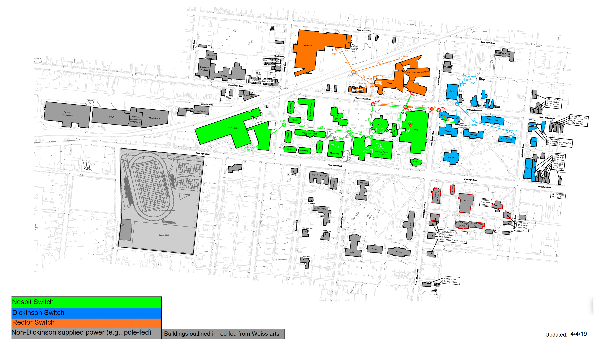
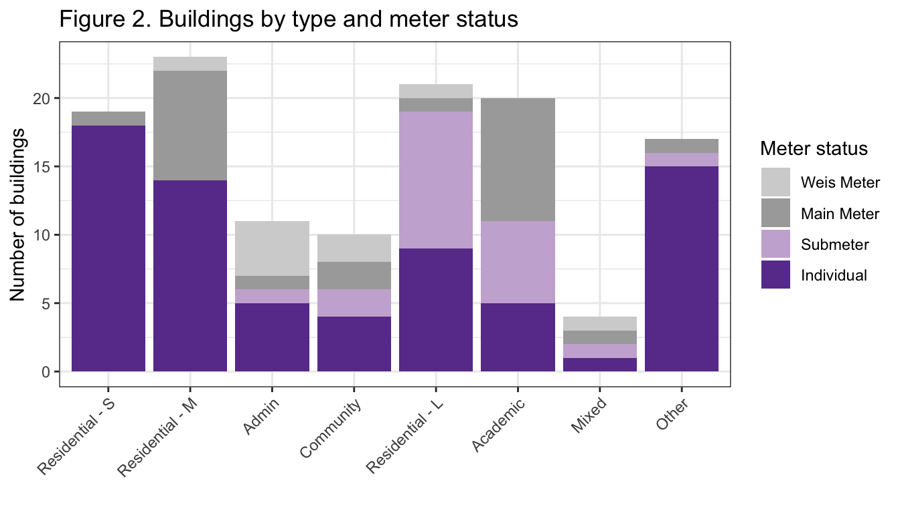

Last updated: 2026-08-15
Checks: 6 1
Knit directory: dickinson_power/
This reproducible R Markdown analysis was created with workflowr (version 1.7.2). The Checks tab describes the reproducibility checks that were applied when the results were created. The Past versions tab lists the development history.
The R Markdown is untracked by Git. To know which version of the R
Markdown file created these results, you’ll want to first commit it to
the Git repo. If you’re still working on the analysis, you can ignore
this warning. When you’re finished, you can run
wflow_publish to commit the R Markdown file and build the
HTML.
Great job! The global environment was empty. Objects defined in the global environment can affect the analysis in your R Markdown file in unknown ways. For reproduciblity it’s best to always run the code in an empty environment.
The command set.seed(20260107) was run prior to running
the code in the R Markdown file. Setting a seed ensures that any results
that rely on randomness, e.g. subsampling or permutations, are
reproducible.
Great job! Recording the operating system, R version, and package versions is critical for reproducibility.
Nice! There were no cached chunks for this analysis, so you can be confident that you successfully produced the results during this run.
Great job! Using relative paths to the files within your workflowr project makes it easier to run your code on other machines.
Great! You are using Git for version control. Tracking code development and connecting the code version to the results is critical for reproducibility.
The results in this page were generated with repository version c58899c. See the Past versions tab to see a history of the changes made to the R Markdown and HTML files.
Note that you need to be careful to ensure that all relevant files for
the analysis have been committed to Git prior to generating the results
(you can use wflow_publish or
wflow_git_commit). workflowr only checks the R Markdown
file, but you know if there are other scripts or data files that it
depends on. Below is the status of the Git repository when the results
were generated:
Ignored files:
Ignored: .DS_Store
Ignored: .Rhistory
Ignored: .Rproj.user/
Ignored: analysis/.DS_Store
Ignored: analysis/.Rhistory
Ignored: analysis/figure/
Ignored: analysis_to-fix/.DS_Store
Ignored: data/.DS_Store
Ignored: data/FY25 Main Meter Data.xlsx
Ignored: data/building_list_FY25_updated.xlsx
Ignored: data/graph_data_life_exp.csv
Ignored: data/housing_counts.csv
Ignored: keys/.DS_Store
Ignored: output/annual_kwh.csv
Ignored: output/building_check.csv
Ignored: output/building_check.xlsx
Ignored: output/buildings_graph.csv
Ignored: output/daily_kwh.csv
Ignored: output/kwh_academic_2026-03-16.csv
Ignored: output/kwh_academic_2026-03-17.csv
Ignored: output/kwh_academic_2026-03-18.csv
Ignored: output/kwh_academic_2026-03-22.csv
Ignored: output/kwh_academic_2026-03-23.csv
Ignored: output/kwh_academic_2026-03-25.csv
Ignored: output/kwh_academic_2026-03-30.csv
Ignored: output/kwh_academic_2026-04-07.csv
Ignored: output/kwh_academic_2026-04-13.csv
Ignored: output/kwh_academic_2026-04-26.csv
Ignored: output/kwh_annual.csv
Ignored: output/kwh_annual_2026-03-04.csv
Ignored: output/kwh_annual_2026-03-12.csv
Ignored: output/kwh_annual_2026-03-16.csv
Ignored: output/kwh_annual_2026-03-17.csv
Ignored: output/kwh_annual_2026-03-18.csv
Ignored: output/kwh_annual_2026-03-22.csv
Ignored: output/kwh_annual_2026-03-23.csv
Ignored: output/kwh_annual_2026-03-25.csv
Ignored: output/kwh_annual_2026-03-30.csv
Ignored: output/kwh_annual_2026-04-07.csv
Ignored: output/kwh_annual_2026-04-13.csv
Ignored: output/kwh_annual_2026-04-26.csv
Ignored: output/kwh_annual_20260225.csv
Ignored: output/kwh_annual_20260226.csv
Ignored: output/kwh_daily.csv
Ignored: output/kwh_daily_2026-03-04.csv
Ignored: output/kwh_daily_2026-03-12.csv
Ignored: output/kwh_daily_2026-03-16.csv
Ignored: output/kwh_daily_2026-03-17.csv
Ignored: output/kwh_daily_2026-03-18.csv
Ignored: output/kwh_daily_2026-03-22.csv
Ignored: output/kwh_daily_2026-03-23.csv
Ignored: output/kwh_daily_2026-03-25.csv
Ignored: output/kwh_daily_2026-03-30.csv
Ignored: output/kwh_daily_2026-04-07.csv
Ignored: output/kwh_daily_2026-04-13.csv
Ignored: output/kwh_daily_2026-04-26.csv
Ignored: output/kwh_daily_20260225.csv
Ignored: output/kwh_daily_20260226.csv
Ignored: output/kwh_main_annual.csv
Ignored: output/kwh_main_daily.csv
Untracked files:
Untracked: analysis/conclusions.Rmd
Untracked: analysis/methods.Rmd
Unstaged changes:
Modified: analysis/_site.yml
Modified: analysis/about.Rmd
Modified: analysis/data_wrangling_final.Rmd
Modified: analysis/index.Rmd
Note that any generated files, e.g. HTML, png, CSS, etc., are not included in this status report because it is ok for generated content to have uncommitted changes.
There are no past versions. Publish this analysis with
wflow_publish() to start tracking its development.
library(tidyverse) # load tidyverse
library(ggthemes)
library(GGally)Buildings on Dickinson’s campus vary in how they are metered for electricity usage. Some buildings (and even individual apartments within buildings) have their own electricity meters, while others share a combined meter (Figure 1). All buildings in green, orange, and blue share a combined meter (the “Main Meter”). Some buildings on the Main Meter additionally have a “submeter” to track their individual electricity usage. Buildings outlined in red share a separate combined meter (“Weis Meter”). Buildings in gray with a black outline have their own individual electricity meters. The upshot of this arrangement is that electricity data at the building level is only available for a subset of campus buildings. We present a mix of aggregate and individual findings.
knitr::include_graphics("assets/electrical-grid.png", error = FALSE)Figure 1. Dickinson’s electrical grid (diagram courtesy of Mike Kiner)

The electricity data analyzed here were derived from a combination of daily electricity use reported by the electricity provider (PP&L) and daily electricity use recorded on submeters. The data for FY25 were initially organized and cleaned by the Center for Sustainability Education. Electricity data were fairly complete for the two aggregate meters and for buildings with individual meters (90-100% of days with data). Data for submetered buildings were more variable, with some buildings having >90% of days with usable data and other buildings having little to no usable data (see Electricity Summary for details).
We then joined electricity use information with information on building characteristics shared with us by Facilities Management. This allowed us to match electricity usage with important contextual information including building size and history of renovation. Electricity data for individual buildings was most available for residential buildings and ‘Other’ buildings (Figure 2), a category including assorted athletics buildings, faculty/staff residences, and auxillary buildings. Aggregate meters were prevalent for Academic, Administrative, and Community buildings (Figure 2).
# summarize slightly differently for graphing
buildings_graph <- read.csv("./keys/fy25_building_list_updated.csv", strip.white = T) %>%
mutate(meter = ifelse(weis_meter == 1, "Weis Meter",
ifelse(main_meter == 1 & main_disagg == 0, "Main Meter",
ifelse(main_disagg == 1, "Submeter", "Individual")))) %>%
filter(!is.na(meter) & !type_new %in% c("Residential - U","Non-building","Solar"))
buildings_graph$meter <- factor(buildings_graph$meter,
levels = c("Weis Meter", "Main Meter",
"Submeter", "Individual"))
pal <- c("lightgrey","darkgrey","#CAB2D6","#6A3D9A")
ggplot(buildings_graph,
aes(x = reorder(type_new, sqft, FUN = "sum"), fill = meter)) +
geom_bar(position = "stack") +
scale_fill_manual(values = pal) +
theme_bw() +
labs(x = "", y = "Number of buildings", fill = "Meter status",
title = "Figure 2. Buildings by type and meter status") +
theme(axis.text.x = element_text(angle = 45, vjust = 1, hjust = 1))
To describe campus electricity usage and its associated fiscal and environmental costs, first we summarized FY25 electricity usage by building (or meter for aggregate meters). We then calculated additional indicators including estimated financial cost, associated greenhouse gas emissions in metric tons of CO2-equivalents, and electricity use normalized by square footage. Electricity usage normalized by student occupancy was also calculated for residential buildings. We estimated financial cost based on per kWh supply and delivery charges in June 2025 for the main meter ($0.08/kWh), a value that will underestimate cost for smaller buildings due to variable electricity costs. We estimated greenhouse gas emissions using standard conversion factors based on a regional fuel blend for electricity (0.30 CO2e/kWh, Leary 2025).
Results of these analyses are presented in an overall summary as well summaries for each building type. They are presented in interactive tables to allow the user to sort and rank buildings by different indicators. Throughout, we also benchmarked Dickinson’s electricity usage against other U.S. colleges and universities using the U.S. Energy Information Administration’s 2018 Commercial Buildings Energy Consumption Survey (EIA 2022). Finally, we investigated seasonal patterns in electricity usage and electricity intensity using exploratory graphs.
To gain a deeper understanding of factors associated with electricity usage, we conducted case studies on one building of each type, chosen in consultation with CSE. We used a statistical modeling approach called multiple regression to simultaneously investigate several variables that are expected to influence electricity usage:
The relationship between electricity usage and outdoor temperature was fit using a segmented (i.e. V-shaped) model since electricity usage tends to go up with both colder and hotter temperatures (for heating and cooling, respectively). The model allows us to estimate the unique effect of each of these variables while accounting for the others. The analysts for each building interpreted their results in light of information related to HVAC systems and occupancy patterns.
Energy Information Administration (EIA). (2022). 2018 Commercial Buildings Energy Consumption Survey (CBECS). https://www.eia.gov/consumption/commercial/
Leary, N. (2025). Dickinson College Greenhouse Gas Inventory 2008-2023. Center for Sustainability Education.
sessionInfo()R version 4.6.0 (2026-04-24)
Platform: x86_64-apple-darwin20
Running under: macOS Ventura 13.7.8
Matrix products: default
BLAS: /Library/Frameworks/R.framework/Versions/4.6-x86_64/Resources/lib/libRblas.0.dylib
LAPACK: /Library/Frameworks/R.framework/Versions/4.6-x86_64/Resources/lib/libRlapack.dylib; LAPACK version 3.12.1
locale:
[1] en_US.UTF-8/en_US.UTF-8/en_US.UTF-8/C/en_US.UTF-8/en_US.UTF-8
time zone: America/New_York
tzcode source: internal
attached base packages:
[1] stats graphics grDevices utils datasets methods base
other attached packages:
[1] GGally_2.4.0 ggthemes_5.2.0 lubridate_1.9.5 forcats_1.0.1
[5] stringr_1.6.0 dplyr_1.2.1 purrr_1.2.2 readr_2.2.0
[9] tidyr_1.3.2 tibble_3.3.1 ggplot2_4.0.3 tidyverse_2.0.0
loaded via a namespace (and not attached):
[1] sass_0.4.10 generics_0.1.4 stringi_1.8.7 hms_1.1.4
[5] digest_0.6.39 magrittr_2.0.5 timechange_0.4.0 evaluate_1.0.5
[9] grid_4.6.0 RColorBrewer_1.1-3 fastmap_1.2.0 rprojroot_2.1.1
[13] workflowr_1.7.2 jsonlite_2.0.0 promises_1.5.0 scales_1.4.0
[17] jquerylib_0.1.4 cli_3.6.6 rlang_1.2.0 withr_3.0.3
[21] cachem_1.1.0 yaml_2.3.12 otel_0.2.0 tools_4.6.0
[25] tzdb_0.5.0 httpuv_1.6.17 ggstats_0.13.0 vctrs_0.7.3
[29] R6_2.6.1 lifecycle_1.0.5 git2r_0.36.2 fs_2.1.0
[33] pkgconfig_2.0.3 pillar_1.11.1 bslib_0.11.0 later_1.4.8
[37] gtable_0.3.6 glue_1.8.1 Rcpp_1.1.1-1.1 xfun_0.59
[41] tidyselect_1.2.1 rstudioapi_0.19.0 knitr_1.51 farver_2.1.2
[45] htmltools_0.5.9 labeling_0.4.3 rmarkdown_2.31 compiler_4.6.0
[49] S7_0.2.2